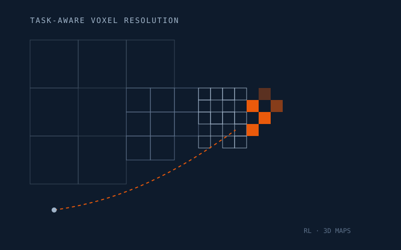

Feb 2026 — Present · CVG, Marc Pollefeys Lab
Task-Aware 3D Map Generation with RL
Training an RL agent to dynamically select voxel resolution in 3D maps based on task relevance, enabling efficient scene representations for downstream navigation. Integrating a 3D reconstruction pipeline into the PEANUT codebase for point-goal and object-goal navigation.
Reinforcement Learning
3D Vision
Navigation